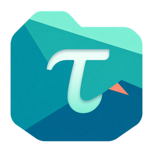

Tauri Explorer is a desktop app. This demo runs here too, but it is made for a larger screen and a keyboard.
The live window needs a local server
From the repository:then open http://127.0.0.1:1455/workshop.html

Tauri ExplorerA file explorer you drive from the keyboard. Free and open source.
Tauri Explorer is a desktop app. This demo runs here too, but it is made for a larger screen and a keyboard.
From the repository:then open http://127.0.0.1:1455/workshop.html
Each one is somebody's computer: its own files, its own look and its own story. The window closes and opens again on the one you pick.